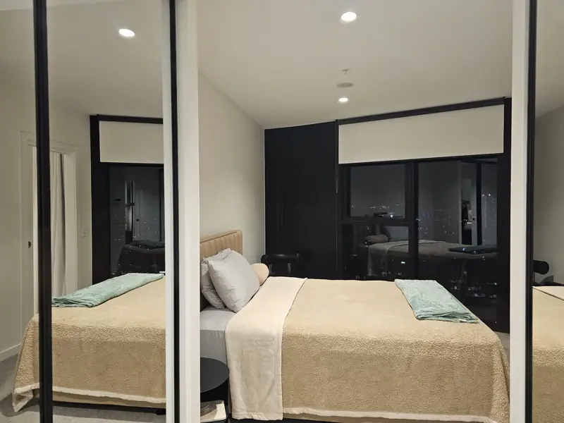

Residential
cleaning
Cleaning for houses, apartments and townhouses, planned around the rooms you want done.
About house cleaning Call Tactix
Call Tactix
Home cleaning for NDIS participants, planned around your routine and the rooms you need help with.
Every cleaner holds NDIS Worker Screening clearance, a police check and a Working with Children Check.

Tell us which parts of your home you need help with. Common requests include:
We confirm what's included before the first clean, so you know what to expect each visit.
Call or email Tactix to talk about the cleaning you need. You can get in touch yourself, or a family member, carer, support coordinator or plan manager can contact us for you.
We'll ask about your home, the rooms you need help with and the days and times that suit. Then we agree what each clean covers and give you a quote before anything is booked.
If something about your home needs care, tell us early. That might be a pet, equipment we should work around, a room to leave alone, or a preferred contact person. We plan the clean around it.
Every cleaner who comes
into your home holds these.
The nationally recognised check for people who work with NDIS participants.
A current police check for every cleaner.
A current Working with Children Check for every cleaner.



If you're using NDIS funding, check with your plan manager or support coordinator how cleaning fits in your plan before you arrange a clean. They can tell you which budget it comes from and what paperwork they need from us.
You don't need to send your NDIS number, plan documents or health information to get a quote.
These details help us quote accurately:
Yes. A family member, carer, support coordinator or plan manager can call or email on your behalf.
Yes. Every cleaner holds NDIS Worker Screening clearance, as well as a police check and a Working with Children Check.
We clean homes across Melbourne. Tell us your suburb when you get in touch and we'll confirm we can get to you.
We quote based on the size of your home and the rooms and tasks you need help with. You get the quote before anything is booked.
Yes. Download the NDIS cleaning brochure (PDF) and share it with them.
Cleaning for houses, apartments and townhouses, planned around the rooms you want done.
About house cleaningCleaning before you hand back the keys, quoted for your property and move-out date.
About end-of-lease cleaningTell us a little about your home and the help you need. Call or email, whichever suits you.